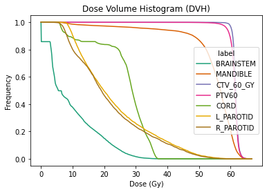

DVH Analysis Example¶
This notebook demonstrates how to compute and plot a DVH (Dose Volume Histogram).
Import Modules¶
[1]:
try:
import platipy
except:
!pip install git+https://github.com/pyplati/platipy.git
import platipy
import matplotlib.pyplot as plt
import seaborn as sns
import SimpleITK as sitk
%matplotlib inline
from platipy.imaging.tests.data import get_hn_nifti
from platipy.imaging import ImageVisualiser
from platipy.imaging.label.utils import get_com
from platipy.imaging.dose.dvh import calculate_dvh_for_labels, calculate_d_x, calculate_v_x
Download Test Data¶
This will download some data from the TCIA TCGA-HNSC dataset. The data is for one patient and contains a CT, dose and some structures.
[2]:
data_path = get_hn_nifti()
Load data¶
Let’s read in the data that we’ve downloaded
[3]:
test_pat_path = data_path.joinpath("TCGA_CV_5977")
ct_image = sitk.ReadImage(str(test_pat_path.joinpath("IMAGES/TCGA_CV_5977_1_CT_ONC_NECK_NECK_4.nii.gz")))
dose = sitk.ReadImage(str(test_pat_path.joinpath("DOSES/TCGA_CV_5977_1_PLAN.nii.gz")))
dose = sitk.Resample(dose, ct_image)
structure_names =["BRAINSTEM", "MANDIBLE", "CTV_60_GY", "PTV60", "CORD", "L_PAROTID", "R_PAROTID"]
structures = {
s: sitk.ReadImage(str(test_pat_path.joinpath("STRUCTURES", f"TCGA_CV_5977_1_RTSTRUCT_{s}.nii.gz"))) for s in structure_names
}
Visualise data¶
and now let’s visualise the data we’ve got
[4]:
vis = ImageVisualiser(ct_image, cut=get_com(structures["PTV60"]))
vis.add_scalar_overlay(dose, discrete_levels=20, colormap=plt.cm.get_cmap("inferno"))
vis.add_contour(structures)
fig = vis.show()

Compute DVH¶
here we compute the DVH using the dose and structures loaded. We get the DVH back in a pandas DataFrame object.
[5]:
dvh = calculate_dvh_for_labels(dose, structures)
Plot DVH¶
using the pandas DataFrame, we plot the DVH here
[6]:
plt_dvh = dvh.melt(id_vars=["label", "cc", "mean"], var_name="bin", value_name="dose")
plt = sns.lineplot(data=plt_dvh, x="bin", y="dose", hue="label", palette="Dark2")
text = plt.set(xlabel="Dose (Gy)", ylabel="Frequency", title="Dose Volume Histogram (DVH)")

DVH Metrics¶
Finally, we extract commonly used metrics from the DVH, such as D95 or V40.
[7]:
df_metrics = calculate_d_x(dvh, 95)
df_metrics = df_metrics.append(calculate_v_x(dvh, 40))
df_metrics
[7]:
| label | metric | value | |
|---|---|---|---|
| 0 | BRAINSTEM | D95 | 0.000000 |
| 1 | MANDIBLE | D95 | 36.500000 |
| 2 | CTV_60_GY | D95 | 60.200000 |
| 3 | PTV60 | D95 | 58.900000 |
| 4 | CORD | D95 | 6.500000 |
| 5 | L_PAROTID | D95 | 9.100000 |
| 6 | R_PAROTID | D95 | 7.300000 |
| 0 | BRAINSTEM | V40 | 0.000000 |
| 1 | MANDIBLE | V40 | 59.137344 |
| 2 | CTV_60_GY | V40 | 190.980434 |
| 3 | PTV60 | V40 | 280.184746 |
| 4 | CORD | V40 | 0.000000 |
| 5 | L_PAROTID | V40 | 0.946522 |
| 6 | R_PAROTID | V40 | 1.392365 |